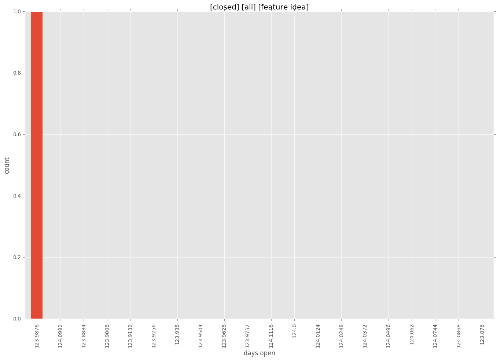

authors
maintainers
- jhawkesworth
contributors
- jhawkesworth : 9 commits
total issue counts
bugfix pull request: 2
pullrequest: 5
docs pull request: 1
feature pull request: 1
feature idea: 1
issue: 4
new plugin: 1
bug report: 3
issue history
pullrequest history
days open by issue type
feature pull request
count: 1
std: nan
min: 26
max: 26
median: 26.0
mean: 26.0
all
count: 12
std: 34.8477206767
min: 0
max: 124
median: 8.0
mean: 19.0
pullrequest
count: 0
std: nan
min: nan
max: nan
median: nan
mean: nan
docs pull request
count: 2
std: 0.0
min: 0
max: 0
median: 0.0
mean: 0.0
bugfix pull request
count: 3
std: 2.88675134595
min: 0
max: 5
median: 5.0
mean: 3.33333333333
feature idea
count: 1
std: nan
min: 124
max: 124
median: 124.0
mean: 124.0
issue
count: 0
std: nan
min: nan
max: nan
median: nan
mean: nan
new plugin
count: 2
std: 0.0
min: 11
max: 11
median: 11.0
mean: 11.0
bug report
count: 3
std: 17.8978583449
min: 0
max: 35
median: 11.0
mean: 15.3333333333
closures grouped by total days open
